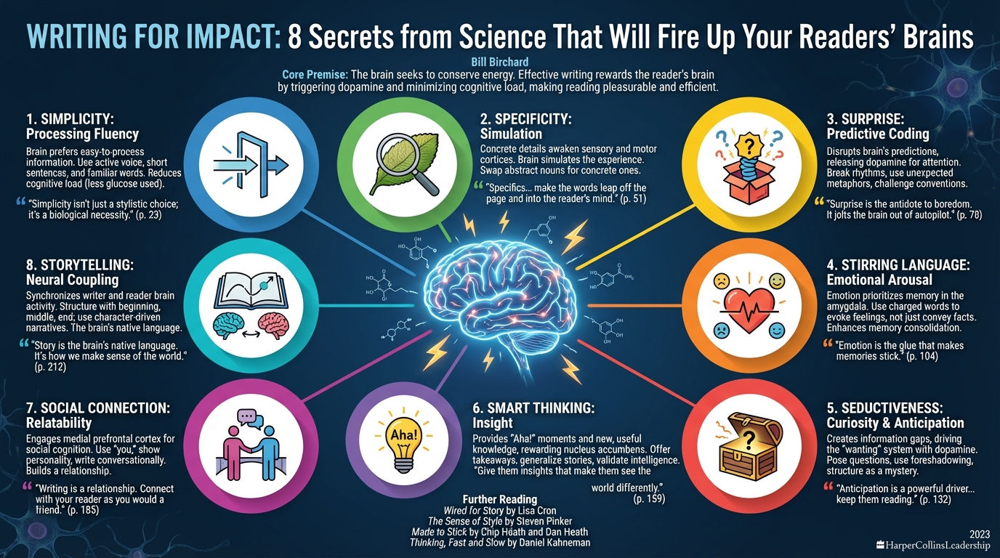

isbn-13: 9781400241491
Audible
AI Generated Content
Generated by gemini-3-pro-preview

Writing for Impact: 8 Secrets from Science That Will Fire Up Your Readers’ Brains by Bill Birchard (HarperCollins Leadership, 2023) examines the intersection of neuroscience and writing. Birchard, a business journalist and writing coach, posits that successful writing is not merely a matter of artistic style or grammatical adherence, but rather an engagement with the biological processes of the human brain. The book structures its advice around eight “secrets”—all beginning with the letter ‘S’—that correspond to specific neural responses and reward circuits.
Core Premise: The Neural Reward System
Birchard argues that the brain consumes a disproportionate amount of the body’s energy (roughly 20%) and therefore seeks to conserve effort. Consequently, readers are biologically driven to ignore writing that requires excessive cognitive load. Effective writing rewards the reader’s brain by triggering the release of dopamine and other neurochemicals, making the act of reading feel pleasurable and efficient.
“The brain is wired to consume information that helps us survive and thrive. It rewards us for learning.” (p. 2)
“When you write in a way that aligns with the brain’s hardwiring, you captivate your readers.” (p. 5)
The Eight Secrets of Writing for Impact
1. Simplicity: Processing Fluency
The brain prefers information that is easy to process, a concept known as “processing fluency.” Complex sentences, jargon, and passive voice increase cognitive load, causing the reader’s attention to drift.
- Scientific basis: Short sentences and familiar words require less glucose to process.
- Application: Use active voice, keep sentences short, and place the subject and verb close together.
“Simplicity isn’t just a stylistic choice; it’s a biological necessity. If you make the reader work too hard, they will tune out.” (p. 23)
2. Specificity: Simulation
When readers encounter concrete, specific details, the brain simulates the experience using the sensory and motor cortices. Abstract language remains processed only in the language centers, whereas specific language lights up the whole brain.
- Scientific basis: Grounded cognition; the brain treats reading about an action similarly to performing the action.
- Application: Swap abstract nouns for concrete ones (e.g., use “sprint” instead of “go quickly”).
“Specifics awaken the brain’s sensory and motor cortices. They make the words leap off the page and into the reader’s mind.” (p. 51)
3. Surprise: Predictive Coding
The brain is a prediction machine. It constantly anticipates what will happen next to save energy. When a prediction fails—when a writer disrupts a pattern—the brain releases dopamine to focus attention on the novelty.
- Scientific basis: The reward prediction error; unexpected stimuli heighten neural plasticity and retention.
- Application: Break established rhythms, use unexpected metaphors, and challenge conventional wisdom.
“Surprise is the antidote to boredom. It jolts the brain out of autopilot and demands attention.” (p. 78)
4. Stirring Language: Emotional Arousal**
Emotion is a primary driver of attention and memory. Words with strong emotional connotations activate the amygdala, prioritizing that information for storage.
- Scientific basis: Emotional arousal enhances memory consolidation in the hippocampus.
- Application: Utilize “charged” words rather than neutral ones to evoke feelings, not just convey facts.
“Emotion is the glue that makes memories stick. If you want your readers to remember what you wrote, you have to make them feel it.” (p. 104)
5. Seductiveness: Curiosity and Anticipation
This strategy leverages the brain’s desire to close information gaps. By withholding information or posing questions, the writer creates a state of anticipation (wanting) rather than just satisfaction (liking).
- Scientific basis: The “wanting” system involves dopamine, which drives the pursuit of information.
- Application: Use foreshadowing, pose questions early in the text, and structure writing as a mystery to be solved.
“Anticipation is a powerful driver of behavior. By keeping the reader guessing, you keep them reading.” (p. 132)
6. Smart Thinking: Insight
Humans have an innate drive for competence and mastery. Providing readers with “Aha!” moments triggers deep satisfaction. The brain rewards the acquisition of new, useful knowledge that aids survival or social standing.
- Scientific basis: Insight stimulates the brain’s reward circuit, specifically the nucleus accumbens.
- Application: Offer distinct takeaways, generalize specific stories into universal truths, and validate the reader’s intelligence.
“Readers want to feel smart. Give them insights that make them see the world differently.” (p. 159)
8. Storytelling: Neural Coupling
Stories are the most effective way to transmit information because they engage multiple brain regions simultaneously. Through “neural coupling,” the listener’s brain activity mirrors that of the storyteller.
- Scientific basis: Narrative transportation; stories synchronize the brains of the writer and reader.
- Application: Structure non-fiction with a beginning, middle, and end; use character-driven narratives to explain abstract concepts.
“Story is the brain’s native language. It’s how we make sense of the world.” (p. 212)
Further Reading
- Wired for Story: The Writer’s Guide to Using Brain Science to Hook Readers from the Very First Sentence by Lisa Cron
- The Sense of Style: The Thinking Person’s Guide to Writing in the 21st Century by Steven Pinker
- Made to Stick: Why Some Ideas Survive and Others Die by Chip Heath and Dan Heath
- Thinking, Fast and Slow by Daniel Kahneman (For the foundational science on System 1 vs. System 2 thinking referenced in Birchard’s book)
7. Social Connection: Relatability
Humans are an ultra-social species. The brain defaults to thinking about other people when at rest. Writing that feels personal or conversational engages the medial prefrontal cortex, which is involved in social cognition.